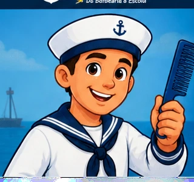
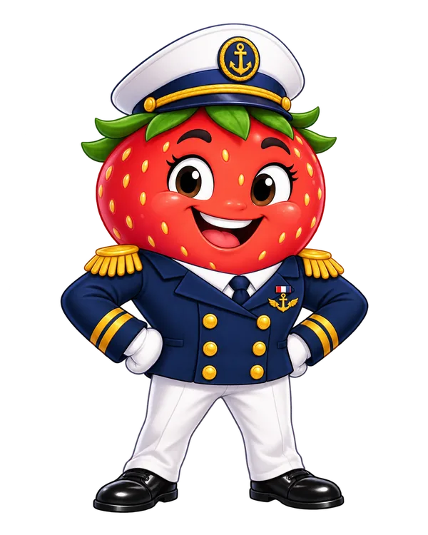
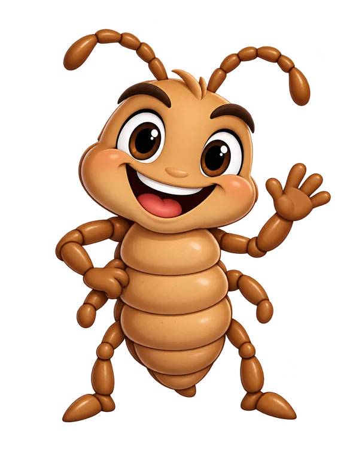
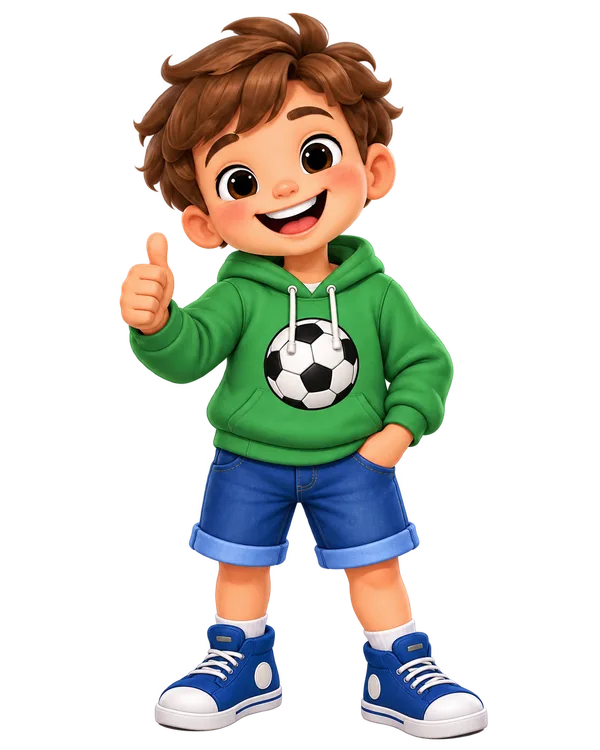
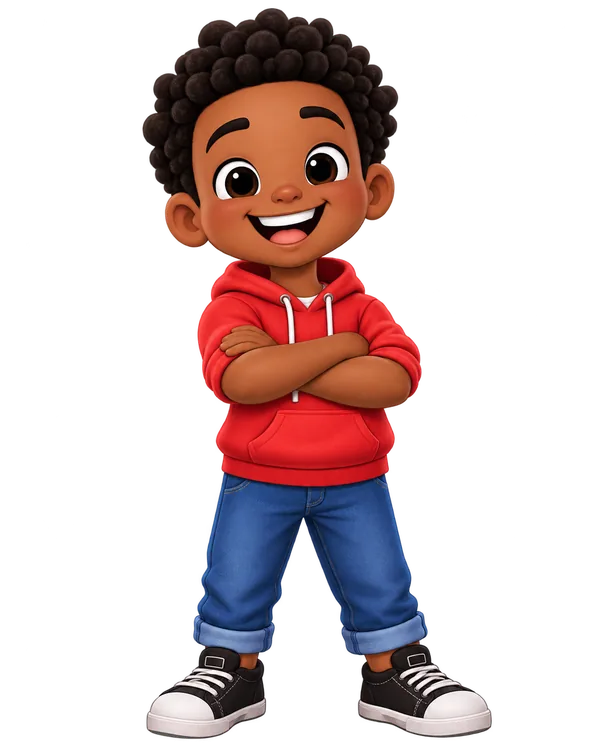
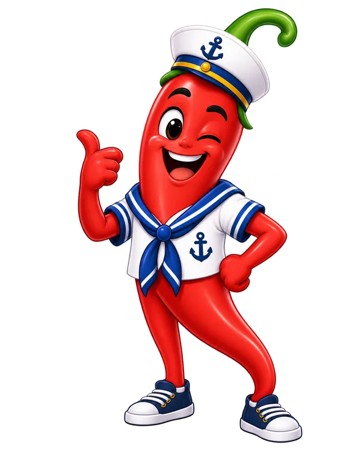
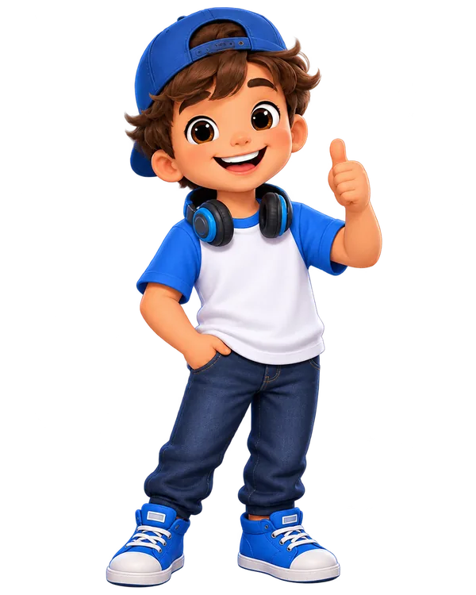
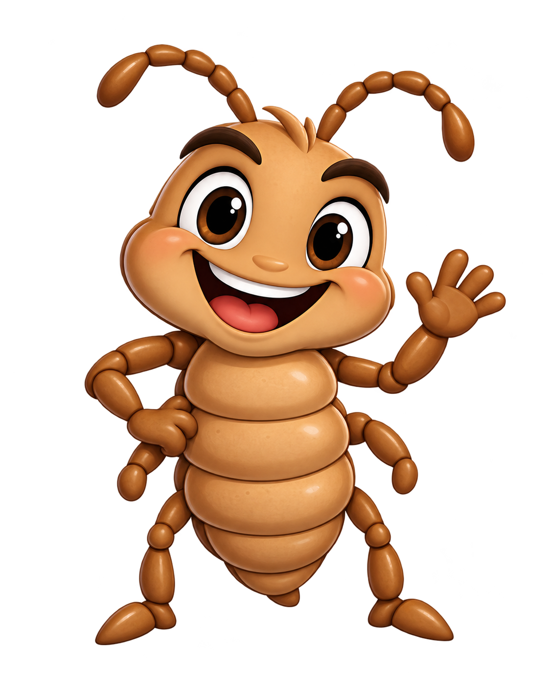

ÁREA DA CRIANÇA
Tripulação, temos uma missão!
Aprenda sobre cuidado, prevenção e respeito com jogos rápidos. Você pode jogar no seu ritmo e repetir quantas vezes quiser.
Importante: ter piolho não é motivo de vergonha. Aqui a missão é aprender e cuidar sem preconceito.
MEU PROGRESSO0 de 3 missões concluídas
01 Pode ou não pode?
02 Caça ao Piolho
03 Mitos ou Verdades?

SEU GUIAMarinheiro Pente Fino
“Escolha uma missão e venha aprender comigo!”
CENTRO DE TREINAMENTO
Escolha sua missão
São três jogos diferentes. Todos dão feedback na hora e podem ser usados pelo teclado.

MISSÃO 01Pode ou não pode?
Descubra quais atitudes ajudam no cuidado e na prevenção.
Jogar agora →
MISSÃO 02Caça ao Piolho
Observe com atenção e encontre os personagens certos em três níveis.
Começar busca → MISSÃO 03Mitos ou Verdades?
Responda 10 perguntas, some até 100 pontos e tente conquistar o distintivo máximo.
Testar conhecimentos →CONHEÇA A TRIPULAÇÃO
12 personagens, uma só missão
Cada personagem ajuda de um jeito diferente nas atividades da Operação Pente Fino.

JoãoCurioso e participativo
JoséParceiro da turma MaryAprende brincando
MaryAprende brincando BabiFala de cuidados
BabiFala de cuidados
Sub PimentaLança desafios SolEspalha boas atitudes
SolEspalha boas atitudes
BielNarrador da aventuraMISSÃO 01 · JOGO EM FAMÍLIA
Família Sem Piolho
Este é o jogo enviado para o projeto: de 2 a 4 jogadores, com tabuleiro, desafios, minijogos e perguntas educativas sobre prevenção e cuidados.
MODO DETETIVENÍVEL 1 / 3
PONTOS0
ALVOS0 / 5
TEMPO—
RECORDE0
CAÇA AO PIOLHO
Capture o Piolhinho
O Piolhinho se movimenta entre os fios. Clique nele 5 vezes para completar o nível.
O modo desafio é opcional. Você pode jogar sem cronômetro e pausar o movimento quando quiser.
Clique no Piolhinho para pontuar. Use Tab + Enter se preferir teclado.

MISSÃO 02Olhos de detetive!
Caçe, pontue e aprenda
Agora a missão ficou mais dinâmica: o Piolhinho se movimenta, cada acerto soma pontos e os três níveis valem até 100 pontos. A Lendinha permanece presa ao fio, como acontece de verdade.
- Nível 1: capture o Piolhinho 5 vezes — até 50 pontos.
- Nível 2: encontre 3 Lendinhas presas aos fios — até 30 pontos.
- Nível 3: escolha a atitude preventiva correta — 20 pontos.
MISSÃO 03Professora Lili pergunta
Mitos ou Verdades?
São 10 perguntas. Cada acerto vale 10 pontos. Mesmo quando errar, você recebe a explicação correta.
PONTUAÇÃO0/ 100 pontos
QUIZ EDUCATIVO1 / 10
MITO OU VERDADE?
Qualquer tipo de cabelo pode ter piolho.
Escolha uma opção.
A Professora Lili vai explicar cada resposta.
MINHA COLEÇÃO
Distintivos da Operação
Os distintivos ficam salvos neste navegador quando você conclui as missões.
Aprendiz da Prevenção
Conclua “Pode ou não pode?” para liberar.
🔒 BloqueadoDetetive da Higiene
Complete os três níveis de “Caça ao Piolho”.
🔒 BloqueadoGuardião do Pente Fino
Faça pelo menos 80 pontos em “Mitos ou Verdades?”.
🔒 Bloqueado